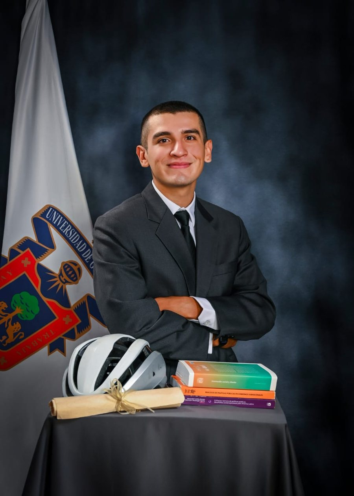

Convierto sistemas en programas que la gente usa y mide.


Tres pilares, y son los mismos que le puse a Garabato.
-
Uno
Pensamiento sistémico para el cambio
Entender cómo unas cosas afectan a otras para lograr un cambio real. Un diagrama que no termina en un punto de apalancamiento no sirvió de nada.
-
Dos
Co-creación
Todo cambio debe hacerse por, para y con las personas. Es el centro del co-diseño de políticas públicas, no un anexo participativo al final del proceso.
-
Tres
Basado en datos y soluciones GovTech
Habilitar datos y herramientas tecnológicas para mejorar el co-diseño de políticas públicas, su ejecución y su seguimiento. No digitalizar la burocracia: cambiarla.
Mi portafolio de proyectos
Los proyectos donde más responsabilidad he tenido. Clic en cada uno para ver el detalle.
Mi experiencia
Trabajé dentro del gobierno antes de operar programas para el gobierno. Esa es la razón por la que Garabato existe.
Feb 2026 — hoy Redwood Capital Partners Project manager
Project manager en INGENIA Play Lab, y soporte de medición y mejora de procesos al resto del portafolio de programas de incubación y aceleración. Rediseñé con DMAIC el sistema de documentación de mentorías, sustituyendo la captura en PDF por un formulario estructurado: de más de diez horas semanales a treinta minutos.
May 2026 — hoy Garabato Definición de producto
Definición de producto de una herramienta de gestión para el ciclo de los programas públicos. En desarrollo.
Ago 2024 — hoy Laboratorio Estudiantil de Políticas Públicas Fundador · asesor
Fundador y coordinador general hasta junio de 2026; hoy asesor. Siete programas de formación y la incubadora EMERGE.
Mar — Sep 2025 Oficina de Presidencia, Ayuntamiento de Guadalajara Practicante profesional
Diseñé la metodología para medir niveles de ruido, su propagación y la población afectada. Nunca llegó a ejecutarse.
Feb — Sep 2024 IMEPLAN — Instituto de Planeación del AMG Practicante profesional
Mantenimiento del SIMER, el sistema de monitoreo del Plan de Acción Climática Metropolitano: 32 matrices de indicadores en Excel, nueve municipios, dos dependencias estatales y una organización civil.
Mi formación profesional
- 2021 — 2025 Universidad de Guadalajara Lic. en Relaciones Internacionales
- 2025 Google Project Management
- 2026 BID PM4R Ágil
- En curso PM4R Professional · CAPM
- El Colegio de Jalisco Diplomados en finanzas públicas y gobernanza
Un colectivo, no sólo un producto.
Ya empecé a construirlo como herramienta —Garabato, el producto—. Pero una herramienta sola no cambia cómo se ejerce lo público; hace falta gente.
Busco construir con otras personas obsesionadas con lo público un espacio para imaginar soluciones de GovTech que habiliten tanto a quien gobierna como a quien es gobernado a crear valor público. No busco programadores: busco quien vea en la tecnología una forma de hacer posible lo que antes no lo era, no sólo de hacer más rápido lo que ya hacíamos. Si esta misión te suena familiar, hablemos.
Empecemos una conversación.
Si traes un programa público que tiene que demostrar resultados, o si la misión de Garabato te resuena, escríbeme.